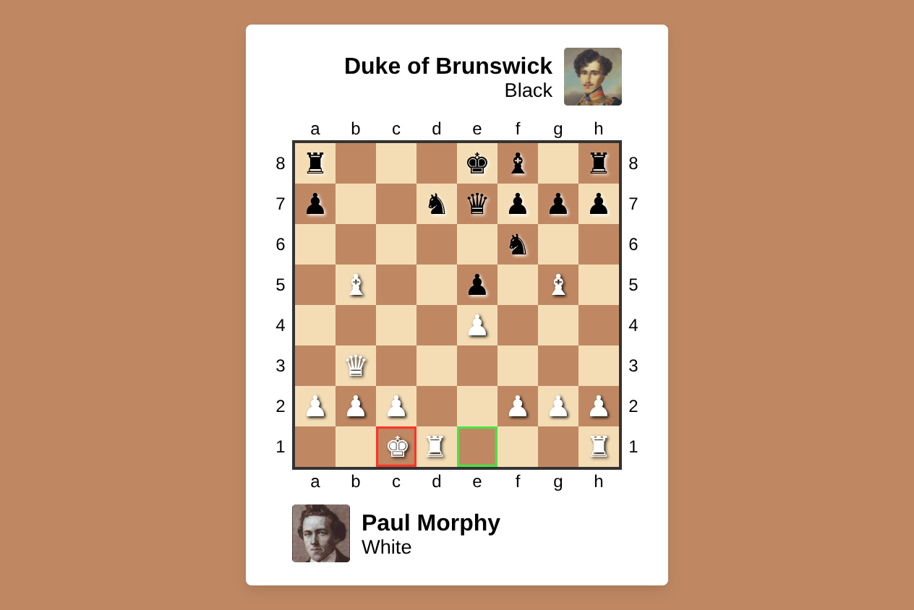
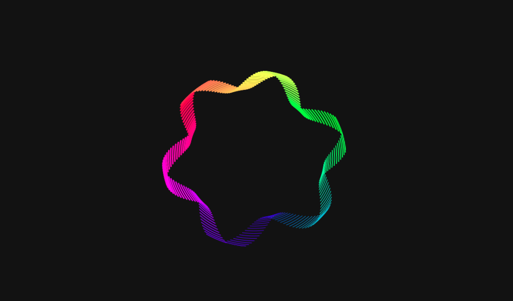

Chess Opera Game
A visual chess animation recreating Paul Morphy’s famous Opera Game.

Chromatic Vortex
An interactive, spinning color wheel that reacts to your mouse. Built with CSS Houdini for Chrome/Edge, with a smooth canvas fallback for other browsers.

Prime Binary Display
An interactive visualization of prime numbers represented in binary form.